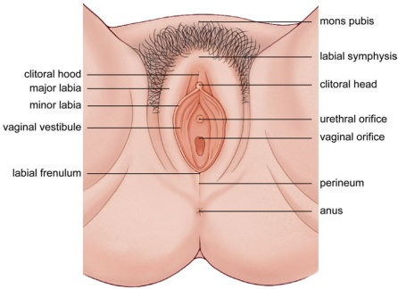
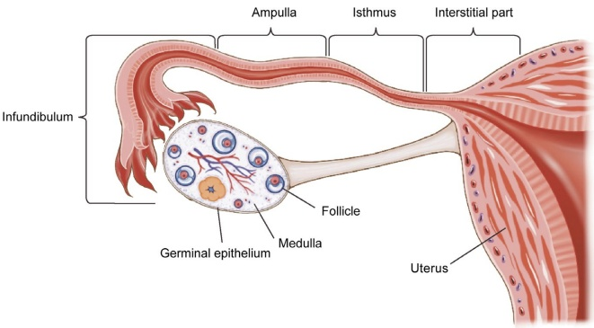
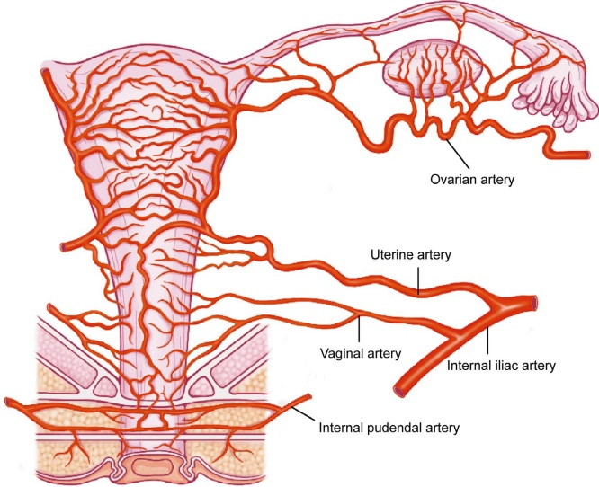
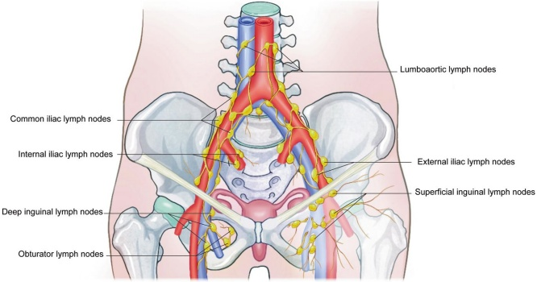
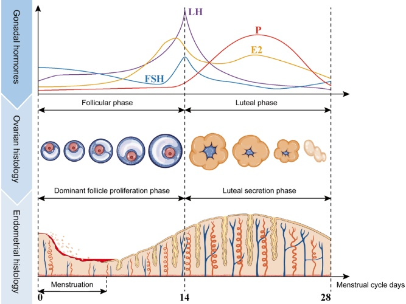

女性生殖系统解剖与生理学
大力和静晶娜
1.1 女性生殖系统解剖结构
女性生殖器官包括内生殖器官和外生殖器官。外生殖器官是暴露于体外的生殖器官部分，而内生殖器官位于骨盆内。女性生殖器官具有内分泌和生殖功能 [1]。
1.1.1 外生殖器
外阴也称为外生殖器。它包括耻骨联合上方的嵴、大阴唇（阴道外唇）、小阴唇（阴道内唇）、阴蒂和阴道口，这些结构前方与耻骨联合相接， 会阴部位于后方，位于股骨内侧，两侧（图1.1）。
耻骨嵴：它位于耻骨联合前方的一个隆起结构，富含脂肪组织。青春期时，阴毛开始在耻骨嵴萌发，呈倒三角形分布。
大阴唇：它们是位于双大腿内侧的一对皮肤褶皱，从耻骨联合开始，延伸至会阴部。大阴唇外侧是含有色素沉着、皮脂腺和汗腺的皮肤，而内侧则呈粘膜样。大阴唇的皮下组织松弛，富含血管、神经和淋巴管，容易发生创伤后血肿。
Anatomy and Physiology of the Female Reproductive System
Da Li and Zhijing Na
1.1 Anatomy of the Female Reproductive System
The female reproductive organs include the internal and external reproductive organs. The external reproductive organs are the parts of the reproductive organs exposed to the outside, and the internal reproductive organs are located in the pelvis. Female reproductive organs have both endocrine and reproductive functions [1].
1.1.1 External Genitalia
The external female reproductive organs are also known as the vulva. It includes the mons pubis, labia majora (outer lips of the vagina), labia minora (inner lips of the vagina), clitoris, and the vaginal vestibule, which are bordered by the pubic symphysis in front, the perineum in back, and are located between the medial femurs, on either side (Fig. 1.1).
Mons pubis: It is an elevated structure in front of the pubic symphysis and is rich in adipose tissue. Pubic hair begins to sprout on the mons pubis at puberty and is distributed in an inverted triangular shape.
Labia majora: They are a pair of folds of skin located along the inner side of the two thighs, starting from the mons pubis and ending at the perineum. The outer side of the labia majora is skin, with pigmentation, containing sebaceous glands and sweat glands, while the inner side is mucosa-like. The subcutaneous tissue of labia majora is loose and rich in blood vessels, nerves, and lymphatic vessels, making it prone to posttrauma hematoma.

小阴唇：它们是阴阜内侧的一对薄皮肤褶皱，前部末端融合后再分成两个叶。前叶形成龟头包皮，后叶形成龟头环。 大阴唇和小阴唇在后方汇合形成阴蒂韧带。小阴唇皮肤湿润，呈棕色，富含神经末梢，非常敏感。
小阴体：位于小阴唇尖端（交界处）下方，小阴体由海绵组织构成，因此可以增大。 阴蒂分为三个部分：前方的阴蒂头，暴露于外阴并对刺激敏感；中间的阴蒂体；以及后方连接到左右耻骨的两根阴蒂蒂。
阴道前庭：指阴小唇两侧之间呈菱形的区域，位于阴蒂后方、大阴唇环前方。 在阴道口和阴蒂韧带之间，有一个浅窝，称为足底窝，也称为阴道前庭窝，在多产妇（分娩过多次的女性）中会消失。
(a) 尿道口（meatus）：这个圆形开口在阴蒂下方有褶皱闭合的边缘。外尿道口两侧的后壁衬有尿道旁腺，这些腺体有微小开口，容易积聚细菌。
(b) 阴道球：也称为阴道球或阴蒂球，位于阴道口两侧，由具有勃起功能的静脉丛组成。 其前端附着于阴蒂头，后端附着于大溪宫，表面被球海绵体肌覆盖。
(c) 巴斯托林腺（或大阴唇腺）：它们是一对与豆粒大小相仿的腺体，位于大阴唇后部，被球海绵体肌覆盖。这些腺体的导管开口于阴道前庭处小阴唇和阴道膜之间的沟槽内，分泌粘液。在正常
Labia minora: These are a pair of thin skin folds on the inner side of the labia majora, fused at the anterior end and then divided into two lobes. The anterior lobe forms the clitoral prepuce, and the posterior lobe forms the clitoral girdle. The labia majora and minora converge at the posterior end to form the frenulum labium pudendal. The labia minora skin is moist, brown in color, rich in nerve endings, and verv sensitive.
Clitoris: Located just below the tip (junction) of the labia minora, the clitoris consists of erectile tissue and can, therefore, swell in size. The clitoris is divided into three parts: the clitoral head in front, which is exposed to the vulva and sensitive to stimulation; the clitoral body in the middle; and the two clitoral pedicles in the posterior. which are attached to the left and right pubic bone.
Vaginal vestibule: It refers to the diamond-shaped area between the two lips of the labia minora, posterior to the clitoris and anterior to the labial girdle. Between the vaginal opening and the frenulum labium pudendal, there is a shallow fossa called the navicular fossa, also known as the fossa of the vestibule of the vagina, which disappears in multipara (a woman who has had multiple births).
(a) Urethral opening (meatus): This round opening has folded closed edges below the clitoris. The posterior wall on either side of the external urethral opening is lined with paraurethral glands, which have tiny openings and are prone to harboring bacteria.
(b) Vestibular bulbs: Also known as bulbs of the vestibule or clitoral bulbs, they are located on either side of the vaginal opening and consist of venous plexus with erectile properties. Their anterior end is attached to the clitoral head and posterior end to the Bartholin's glands, with the surface covered by bulbocavernosus muscle.
(c) Bartholin's glands (or greater vestibular glands): They are a pair of soybean-sized glands covered by bulbocavernosus muscle in the posterior part of the labia majora. The ducts of these glands open in the groove between the labia minora and the hymen at the back of the vaginal vestibule, where they secrete mucus. These glands are not noticeable or palpable under normal
情况下，这些腺体不易察觉或触及，但导管阻塞可能导致这些腺体形成囊肿或脓肿。
(d) 阴道口：它位于尿道口后方，边缘由一层称为阴门的粘膜褶皱环绕，这些褶皱内衬有结缔组织、血管和神经。 在典型病例中，阴道膜中央有一个孔（罕见情况下为多个孔），大小差异很大。在病理情况下，该孔可能闭合或缺失，这需要手术切口以实现正常的月经排出。 阴蒂膜可以通过性交或剧烈体力活动而破裂，经产后仅留下阴道膜残痕。
1.1.2 阴道内脏器官
女性的内生殖器官包括阴道、子宫、输卵管和卵巢（图1.2）。
- 阴道：它是一个向上较宽、向下较窄的肌肉通道，位于骨盆腔（真骨盆）下部中央。阴道的前壁长度为7–9厘米，后壁长度为10–12厘米。 阴道不仅是性交的器官，也是月经血排出和胎儿分娩的通道。
(a) 位置：阴道前壁邻近膀胱和尿道；后壁靠近直肠。其上端环绕宫颈，下端开口于阴道门。 阴道和宫颈之间的嵴称为阴道穹窿（阴道腔，阴道穹窿），它分为四个部分：前、后和两侧（左侧和右侧）。穹窿的后部与直肠相邻。

circumstances, but occlusion of the duct(s) may result in cyst(s) or abscess(es) in these glands.
(d) Vaginal opening: It is located posterior to the urethral opening and is rimmed by folds of mucous membranes called the hymen, which are lined with connective tissue, blood vessels, and nerves. In typical cases, there is a hole (or multiple holes in rare cases) in the center of the hymen, the size of which varies greatly. In pathological cases, this hole can be closed or absent, which requires a surgical incision, enabling normal menstrual discharge. The hymen can be ruptured by sexual intercourse or by strenuous physical activity and remains only as a hymenal scar after vaginal delivery.
1.1.2 Internal Genitalia
The female internal reproductive organs include the vagina, uterus, fallopian tubes, and ovaries (Fig. 1.2).
- Vagina: It is an upwardly wide and downwardly narrow muscular canal located centrally in the lower part of the pelvic cavity (the true pelvis). The front wall of the vagina is 7–9 cm in length, and the back wall is 10–12 cm in length. The vagina is not only an organ for sexual intercourse but also a channel for menstrual blood to be discharged and for the fetus to be delivered.
(a) Location: The anterior wall of the vagina is adjacent to the bladder and urethra; the posterior wall is close to the rectum. Its upper end wraps around the cervix, and the lower end opens into the vaginal vestibule. The crypt between the cervix and the vagina is called the vaginal fornix (vaginal vault, vault of vagina), which is divided into four parts: anterior, posterior, and lateral (left and right). The posterior component of the fornix is adjacent to the recto-
子宫窝（骨盆最低点）。在临床实践中，该解剖腔隙常作为（血液和/或脓液）引流的穿刺点。
(b) 组织结构：阴道壁由内到外依次为粘膜层、肌层和纤维组织层。 黏膜层覆盖着无腺体的非角化鳞状上皮，由于有多个褶皱而具有高度可伸展性。阴道上三分之一的黏膜层会受到性激素周期性变化的影响。 肌层由两层平滑肌组成，即内环肌和外长肌，并被一层纤维组织覆盖。阴道壁富含静脉丛，因此在受损后容易出血或形成血肿。
- 子宫（或子宫腔）：它是一个壁厚的肌肉器官，具有一个腔隙，是孕育胎儿和生成月经血的器官。 子宫是一个倒梨形的器官，前部和后部略微扁平，由子宫体和宫颈组成。 子宫体和宫颈的比值随年龄和卵巢功能的变化而变化，青春期前为1:2，育龄期女性为2:1（
（15-49岁），绝经后为1:1。子宫重约50克-70克，长7厘米-8厘米，宽4厘米-5厘米，厚2厘米-3厘米，容量（体积）约5毫升。 子宫体上端定义为子宫底，两侧是子宫角。连接子宫体和宫颈的最狭窄部分称为子宫峡部， 上端称为解剖学外口，因其解剖学狭窄；下端称为组织学外口，因子宫内膜过渡到宫颈粘膜。妊娠期间，子宫峡部会延长。 它在妊娠末期可延伸至 7–10 cm，构成软产道的一部分，常作为剖宫产切口。 子宫腔呈三角形，顶部较宽，底部较窄，两侧与输卵管相连，底部与宫颈管相连。子宫的宫颈管是一个矛状腔隙（（在成年女性中长约3厘米），其下端为宫颈口，开口于阴道。子宫的宫颈分为下段（阴道上段或外阴道）和上部阴道前段（或内阴道）。 阴道分娩前，宫颈口呈圆形，但经阴道分娩后会形成横向裂隙，将宫颈分为前唇和后唇。
(a) 位置：子宫位于骨盆中央，子宫底低于骨盆入口水平，宫颈外口略高于坐骨棘水平。 它位于膀胱后方，直肠前方，其下端与阴道相连，两侧连接输卵管和卵巢。当膀胱排空时，成年女性正常的子宫呈轻度前倾和前屈位。
uterine recess (the lowest point of the pelvis). In clinical practice, this anatomical cavity is often the puncture site for (blood and/or pus) drainage.
(b) Tissue structure: The vaginal wall is composed of mucous membrane layer, muscular layer, and fibrous tissue layer from inside to outside. The mucous membrane layer is covered by nonkeratinized stratified squamous epithelium without glands, which is highly extensible due to multiple folds. The mucous membrane layer in the upper 1/3 of the vagina is subject to periodic changes influenced by sex hormones. The muscular layer consists of two layers of smooth muscle, that is, the inner circular and outer longitudinal layers, and is covered by a layer of fibrous tissue. The vaginal wall is rich in venous plexus, making it prone to bleeding or hematoma formation after injury.
- Uterus (or womb): It is a thick-walled muscular organ with a cavity and is the organ that bears the fetus and generates menstrual blood. The uterus is an inverted pear-shaped organ with a slightly flattened front and back, consisting of the corpus uteri (body of the uterus) and the cervix uteri. The ratio of the corpus uteri and the cervix varies with age and ovarian function, with the ratio being 1:2 before puberty, 2:1 in women of childbearing age (
15–49 years old), and 1:1 after menopause. The uterus weighs about 50 g–70 g, is 7 cm–8 cm long, 4 cm–5 cm wide, 2 cm–3 cm thick, and has a capacity (volume) of about 5 mL. The top end of the corpus uteri is defined as the fundus of the uterus, with the cornua uteri (horns of the uterus) on either side of it. The narrowest section connecting the body of the uterus and the cervix is called the isthmus of the uterus, with the upper end termed the anatomical introitus due to its anatomical narrowness and the lower end termed the histological introitus due to the transition of the endometrium into the mucous membrane of the cervix. The isthmus of the uterus lengthens during pregnancy. It can extend to 7–10 cm at the end of gestation, forming a part of the soft delivery canal, and is commonly used as the incision site for cesarean delivery. The uterine cavity is triangular in shape, wide at the top and narrow at the bottom, connected to the fallopian tubes on both sides and the cervical canal at the bottom. The cervical canal of the uterus is a pike-shaped cavity (3 cm long in adult women), the lower end of which is the external opening of the cervix to the vagina. The cervix of the uterus is divided into the lower part (the portio vaginalis or ectocervix), which protrudes into the vagina, and the upper supravaginal part (or endocervix). The external opening of the cervix is round before vaginal delivery but develops a transverse cleft after transvaginal childbirth, dividing the cervix into an anterior and a posterior lip.
(a) Location: The uterus is located in the center of the pelvis, with the fundus of the uterus below the level of the pelvic inlet and the external opening of the cervix slightly above the level of the sciatic spine. It is posterior to the bladder, anterior to the rectum, connected to the vagina at its lower end, and the fallopian tubes and ovaries on either side. When the bladder is empty, the normal uterus of an adult woman is in a mildly anteriorly tilted and forward-flexed position.
(b) 组织结构：子宫体由内到外分三层：子宫内膜（黏膜）、子宫肌层（肌层）和腹膜（浆膜）。子宫内膜进一步分为紧实层、海绵状层和基底层。 其中，三分之二的内表面是功能层（致密层+海绵层），该层受卵巢激素周期性调节。 基底层，即基底层，是与子宫肌层相邻的子宫内膜的另外三分之一，不受激素影响，也不会发生周期性变化。 子宫肌层由大量的平滑肌组织、一些弹性纤维和胶原纤维组成。腹膜覆盖了子宫底以及其前部和后部。 子宫前宫旁间膜向前折叠形成膀胱子宫间隙。 相比之下，后宫颈和阴道后穹窿的腹膜在子宫后方向后折叠形成直肠子宫囊，也称为道格拉斯囊。 子宫颈主要由结缔组织构成，含有少量平滑肌、弹性纤维和血管。 宫颈管黏膜由一层高柱状上皮组成，腺体分泌碱性粘液形成粘液栓，这些粘液栓会受到性激素影响而发生周期性变化。 子宫颈的阴道部分覆盖有鳞状上皮细胞。柱状上皮和鳞状上皮的交界处是子宫颈癌最易发部位。
(c) 子宫的韧带：子宫有四对韧带。
阔韧带是一对翼状的、双层的腹膜褶皱，从子宫前壁和后壁延伸，将子宫的两侧与盆壁相连，限制了子宫向两侧倾斜。 双侧的阔韧带分为前叶和后叶，具有游离的上端。其内侧2/3环绕输卵管，外侧1/3环绕卵巢动脉和静脉，形成输卵巢韧带， 也称为悬吊卵巢韧带（输卵管的纤毛部分未被腹膜覆盖）。 从卵巢内侧到子宫角之间的广韧带略有增厚，称为卵巢固有韧带（或子宫卵巢韧带，卵巢韧带）。 环绕子宫体的广韧带富含血管、神经、淋巴管和松散结缔组织，这些被称为宫旁组织。子宫动脉、静脉和双侧输尿管通过广韧带的根部走行。
圆韧带是一对绳状的平滑肌和结缔组织带。圆韧带在两侧分别从子宫角前下方略低于输卵管近端处发出， 沿阔韧带前叶向前和向外走行，到达骨盆侧壁，然后经腹股沟进入大阴唇前部停止。 圆韧带长约12–14厘米，维持子宫前倾位。
(b) Tissue structure: The body of the uterus consists of three layers from the inside out: the endometrium (mucosa), myometrium (muscularis), and peritoneum (serosa). The endometrium is subdivided into stratum compactum, stratum spongiosum, and stratum basalis. Of these, 2/3 of the interior surface is the functional layer (stratum compactum + stratum spongiosum), which is periodically regulated by ovarian hormones. The stratum basalis, that is, the basal layer, is the other 1/3 of the endometrium adjacent to the myometrium, which is not affected by hormones and does not undergo periodic changes. Myometrium consists of a large amount of smooth muscle tissue, a few elastic fibers, and collagen fibers. The peritoneum covers the uterine fundus and its anterior and posterior portions. The peritoneum of the anterior isthmus of the uterus is forwardly reflexed to form the vesicouterine pouch. In contrast, the peritoneum of the posterior cervix and posterior fornix of the vagina is backwardly reflexed at the back of the uterus to form the recto-uterine pouch, also known as the Douglas pouch. The cervix mainly comprises connective tissue with a small amount of smooth muscle, elastic fibers, and blood vessels. The mucosa of the cervical canal consists of a single layer of high columnar epithelium, with glands secreting alkaline mucus to form mucus plugs, which are subject to periodic changes as influenced by sex hormones. The vaginal part of the cervix is covered by stratified squamous cells. The junction of columnar and squamous epithelium is the most susceptible site for cervical cancer.
(c) Ligaments of the uterus: There are four pairs of ligaments of the uterus.
The broad ligaments are a pair of wing-like, double-layered folds of peritoneum that extend from the anterior and posterior walls of the uterus to connect the two sides of the uterus to the pelvic wall, which restrict the uterus from tilting to the sides. The broad ligament on each side is divided into anterior and posterior lobes with free upper ends. Its medial 2/3 wraps around the fallopian tubes, and its lateral 1/3 wraps around the ovarian arteries and veins, forming the infundibulopelvic ligament, also known as the suspensory ligament of the ovary (the fimbriae of the fallopian tube tubes is not covered by the peritoneum). The broad ligament between the medial side of the ovary and the uterine horn is slightly thickened and is called the proper ligament of the ovary (or utero-ovarian ligament, ovarian ligament). The broad ligaments flanking the body of the uterus are rich in blood vessels, nerves, lymphatic vessels, and loose connective tissue, which are termed paracervical tissues. The uterine arteries, veins, and bilateral ureters pass through the base of the broad ligaments.
The round ligaments are a pair of cord-like, smooth muscle and connective tissue bands. On each side, the round ligament arises from slightly below the proximal end of the fallopian tube in front of the horn of the uterus, travels forward and outward under the anterior lobe of the broad ligament, reaches the lateral pelvic wall, and then stops at the anterior end of the labia majora via the inguinal canal. The round ligaments are about 12–14 cm long and uphold the anteriorly tilted position of the uterus.
宫旁韧带，也称为横颈韧带，是一对由平滑肌和结缔组织纤维构成的坚韧的束状结构，它们水平地走行于宫颈两侧，沿着大骨膜的下部延伸至盆壁。 宫韧带固定宫颈，防止子宫脱垂。
子宫骶韧带（被腹膜覆盖）由平滑肌、结缔组织和支配膀胱的神经组成。 它们起源于子宫体和宫颈交界处后上方，并沿直肠侧方走行至第二和第三骶椎前。 子宫骶韧带将宫颈向后上方牵拉，使子宫保持前倾位。
- 输卵管（或子宫管）：它们是一对靠近卵巢的肌肉导管（长度为8–14厘米），用于精子与卵子结合并输送受精卵。 它们被阔韧带的自由上缘包裹，于内侧与子宫角相连，于外侧呈自由伞状（输卵管口）。
(a) 形态：输卵管从内侧到外侧分为四个部分：宫旁段（或间质部）位于子宫壁内，腔隙最窄，长度约1 cm；峡部位于宫旁段外侧， 呈正常的、相对笔直的形态，长度约 2-3 cm；输卵管壶腹部位于输卵管峡部外侧，其特征是壁薄、腔宽且弯曲，内有丰富的褶皱，长度约 5-8 cm， 卵子通常受精的部位；输卵管的漏斗部约长1–1.5 cm，是输卵管最外侧的部分，呈漏斗状，开口处有许多指状突起（称为纤毛），使其能够“拾取卵子”。
(b) 组织结构：输卵管组织由内到外分为粘膜、平滑肌层和浆膜层。粘膜层覆盖着一层柱状上皮。 这些上皮细胞分为纤毛柱状细胞、分泌细胞和小突起细胞。其中，纤毛细胞协助卵子运输。 肌黏膜肌层收缩有助于卵子拾取和输送受精卵，并在一定程度上防止月经血逆流和感染从宫腔扩散到腹腔。 肌肉收缩和粘膜上皮细胞会周期性地受到性激素的影响。
- 卵巢：它们是一对扁椭圆的性腺，大小和形状随年龄变化。卵巢表面在青春期前光滑，排卵后逐渐变得不平整。 女性在生育期，卵巢大小约为 $ 4\ \text{cm} \times 3\ \text{cm} \times 1\ \text{cm} $，重量约 5 g 至 6 g，颜色呈灰白色，而绝经后，卵巢会逐渐萎缩和变硬（图 1.3）。
(a) 位置：每个侧的卵巢附着于外侧的输卵管卵巢韧带和内侧的卵巢自身韧带，悬挂于子宫和盆壁之间，并与
The cardinal ligaments, also known as the transverse cervical ligaments, are a pair of tough tissue bundles of smooth muscle and connective tissue fibers that run transversely between both sides of the cervix and the pelvic wall along the lower part of the broad ligaments. The cardinal ligaments hold the cervix in place and prevent uterine prolapse.
The uterosacral ligaments (covered by the peritoneum) consist of smooth muscle, connective tissue, and nerves governing the bladder. They originate from behind and superior to the junction of the corpus uteri and the cervix uteri and run laterally around the rectum to the front of the second and third sacral vertebrae. The uterosacral ligaments draw the cervix backward and upward, maintaining the uterus in an anteriorly tilted position.
- Fallopian tubes (or uterine tubes, oviducts): They are a pair of muscular ducts (8–14 cm in length) close to the ovaries that serve as a venue for sperm to couple with the egg and transport the fertilized egg. They are wrapped by the free upper edges of the broad ligaments, connected to the horns of the uterus on the medial side, and are free and umbrella-shaped (fimbriae) on the lateral side.
(a) Morphology: The fallopian tubes are divided into four sections from medial to lateral: the interstitial part (or interstitium) is located in the uterine wall, with the narrowest lumen, about 1 cm in length; the isthmus is lateral to the interstitial part, which is fine and relevantly straight, about 2–3 cm in length; the ampulla is lateral to the isthmus, characterized by a thin wall and a wide and curved lumen, with abundant folds, about 5–8 cm in length, in which fertilization often happens; the infundibulum is about 1–1.5 cm long, is the most lateral part of the fallopian tube, which is funnel-shaped and with many finger-like protrusions (known as fimbriae) at the opening of the tube, enabling it to "pick up the egg."
(b) Tissue structure: The tubal tissue is divided into the mucosae, the smooth muscle layer, and the serosa layer from inner to outer. The mucous layer is covered by a single layer of columnar epithelium. These epithelial cells are divided into ciliated columnar, secretory, and peg cells. Of these, ciliated cells assist in the transport of fertilized eggs. Contraction of the muscles of the muscularis mucosa assists in egg pickup and transport of fertilized eggs and, to some extent, prevents retrograde flow of menstrual blood and the spread of infection from the uterine cavity into the abdominal cavity. Muscle contractions and mucosal epithelial cells are periodically influenced by sex hormones.
- Ovaries: They are a pair of flat oval gonads that vary in size and shape with age. The surface of the ovary is smooth before puberty and gradually becomes uneven following ovulation. The ovary size in women during the fertile period is about $ 4\ \text{cm} \times 3\ \text{cm} \times 1\ \text{cm} $, weighing about 5 g to 6 g and grayish-white in color, while the ovary gradually atrophies and stiffens after menopause (Fig. 1.3).
(a) Location: On each side, the ovary is attached to the infundibulopelvic ligament on the lateral side and the proper ligament of the ovary on the medial side, suspended between the uterus and the pelvic wall, and connected to the

通过卵巢中膜的阔韧带。在卵巢前缘中央是卵巢的血管口，神经和血管通过盆腔漏斗韧带进入和离开卵巢。同时，卵巢后缘是游离的。
(b) 组织结构：卵巢表面未被腹膜覆盖，而是由一层称为原始上皮的立方上皮组成。在原始上皮下方是称为卵巢白膜的致密纤维组织层。 再往里是卵巢实质，进一步分为外层的皮质层（cortex）和内层的髓质层（medulla）。 皮质是卵巢的主要部分，由大小不一的正在发育的卵泡、黄体、黄体退化残留物和间质组织组成。 髓质与卵巢的肾窦相连，由松散结缔组织、丰富的血管、神经、淋巴管和少量平滑肌纤维组成。
1.1.3 血管和淋巴管
为女性生殖器官供血的血管伴有淋巴管。女性生殖器官和骨盆由丰富的淋巴结和淋巴引流支持，静脉和淋巴管在器官之间呈簇状和网络状重叠。
- 动脉：女性内脏和外生殖器官的血液供应主要来自卵巢动脉、子宫动脉、阴道动脉和内套回动脉（图1.4）。
broad ligament by the mesovarium. In the middle of the ovary's anterior margin is the ovary's hilum, where nerves and blood vessels enter and leave the ovary by passing through the pelvic funnel ligament. Meanwhile, the posterior edge of the ovary is free.
(b) Tissue structure: The surface of the ovary is not covered by the peritoneum but a single layer of cuboidal epithelium known as the germinal epithelium. Underneath the germinal epithelium is a layer of dense fibrous tissue known as the tunica albuginea. Further inward is the ovarian substance, further divided into an outer cortical layer (cortex) and an inner medullary layer (medulla). The cortex is the main body of the ovary, consisting of developing follicles of various sizes, the corpus luteum, the remnants resulting from the degeneration of the corpus luteum, and interstitial tissue. The medulla is connected with the hilum of the ovary and consists of loose connective tissue, abundant blood vessels, nerves, lymphatic vessels, and a small number of smooth muscle fibers.
1.1.3 Blood Vessels and Lymphatic Vessels
The blood vessels supplying the female reproductive organs are accompanied by lymphatic vessels. The female reproductive organs and pelvis are supported by abundant lymphatic nodes and lymphatic drainage, with veins and lymphatic vessels coinciding in clusters and networks between the organs.
- Arteries: The blood supply to the female internal and external genital organs mainly comes from the ovarian artery, uterine artery, vaginal artery, and internal pudendal artery (Fig. 1.4).

(a) 卵巢动脉：它从腹主动脉发出，沿盆腔后壁的腰大肌向前走行，向下延伸至骨盆边缘，横过输尿管和髂总动脉下段， 横向穿过输卵管宫骶韧带，然后经卵巢中膜向后穿行，分支进入卵巢，通过卵巢裂隙。 进入卵巢前，卵巢动脉发出一些分支，这些分支走行于输卵管系膜中为输卵管供血，其末端与子宫动脉的升支在子宫角附近汇合。
(b) 子宫动脉：它从内髂总动脉的腹支分支，沿骨盆侧壁后方走行向下和向前， 穿过阔韧带根部和子宫旁组织到达子宫侧方（大约在宫颈内口水平外侧2厘米处），并沿输尿管走行至子宫侧缘， 在其分出为上支和下支处。子宫动脉的上支更粗，沿着子宫侧壁向上蜿蜒走行，称为子宫支，并进一步分出分支
(a) Ovarian artery: It emanates from the abdominal aorta, travels anteriorly along the psoas major muscle in the retroperitoneum, descends outward to the pelvic rim, crosses the ureter and the lower part of the common iliac artery, transverses inwardly across the infundibulopelvic ligament, and then crosses backwardly through the mesovarium, branching off to enter the ovary through the ovarian hilum. Before entering the ovary, the ovarian artery gives off some branches that travel within the mesosalpinx to supply the fallopian tube, and its ending coincides with the ascending ovarian branch of the uterine artery near the uterine horn.
(b) Uterine artery: It branches from the anterior trunk of the internal iliac artery, travels behind the peritoneum along the lateral pelvic wall downward and forward, passes through the base of the broad ligament and the para-uterine tissues to reach the lateral side of the uterus (approximately at 2 cm horizontally outward from the internal cervical orifice), and traverses the ureter to the lateral border of the uterus, where it splits into the upper and lower branches. The upper branch of the uterine artery is thicker and meanders upward along the lateral border of the uterus, which is known as the uterine branch and further splits into the branches
至子宫底，分支至输卵管，以及在子宫角处分支至卵巢。下支更细，其小的次级分支供应宫颈和阴道上段，称为宫颈阴道支。
(c) 阴道动脉：它从内髂总动脉的腹支发出，其分支供应阴道下段和中段的前壁和后壁、膀胱穹窿和膀胱颈。 阴道动脉与宫颈阴道支和内套脏动脉的分支重合。因此，阴道的动脉血供可总结如下： 上部由子宫动脉的宫颈阴道支供血；中部由阴道动脉供血；下部主要由内套回动脉和中痔静脉供血。
(d) 阴部动脉：它是内髂动脉前支的终末分支，经梨状肌下孔从骨盆腔排出，于大坐骨孔处， 环绕坐骨棘的背侧表面，经小坐骨孔到达会阴部，并分为四支：下痔静脉，供应直肠和肛门的下部；会阴动脉， 为会阴浅层供血；外阴唇动脉为大阴唇和小阴唇供血；阴蒂动脉为阴蒂和阴道口球部供血。
静脉：骨盆静脉伴有同名的动脉。它们比动脉数量更多，构成静脉丛，相互连通，并在发生骨盆静脉感染时促进其扩散。 例如，卵巢静脉与卵巢动脉平行走行，右侧汇入下腔静脉，左侧汇入左肾静脉。因此，在行腹主动脉旁淋巴结清扫术时，到达肾静脉水平时应避免损伤这些血管。 此外，左侧骨盆的静脉曲张更常见，因为肾静脉非常细，容易阻碍血流。
淋巴系统：女性内脏和外生殖器以及骨盆富含淋巴供应，淋巴结通常沿相应的血管排列，呈簇状或链状分布。 这些淋巴结的数量和位置差异很大。在内或外生殖器官感染或癌变的情况下，它们可以通过淋巴管扩散或转移到身体的各个部位（图1.5）。
(a) 外生殖器淋巴结：它们分为浅表和深层淋巴结，即浅股腘淋巴结和深股腘淋巴结。
(b) 盆腔淋巴结：包括髂淋巴结、骶前淋巴结和腰方淋巴结（腹主动脉旁淋巴结）。髂淋巴结由闭孔、内髂、外髂和总髂淋巴结组成。
to the fundus, the branches to the fallopian tube, and the branches to the ovary at the uterine horn. The lower branch is thinner, with its small subordinate branches supplying the cervix and the upper part of the vagina, and is known as the cervical-vaginal branch.
(c) Vaginal artery: It branches from the anterior trunk of the internal iliac artery, with its subordinate branches supplying the anterior and posterior walls of the lower and intermediate parts of the vagina, the bladder dome, and the bladder neck. The vaginal artery coincides with the cervical-vaginal branch and branches of the internal pudendal artery. The arterial blood supply to the vagina can therefore be summed up as follows: the upper section is supplied by the cervical-vaginal branch of the uterine artery; the middle section is supplied by the vaginal artery; and the lower section is supplied mainly by the internal pudendal artery and the middle hemorrhoidal artery.
(d) Internal pudendal artery: It is the terminal branch of the anterior trunk of the internal iliac artery, which passes out of the pelvic cavity through the inferior foramen of the pyriformis muscle at the greater sciatic foramen, encircles the dorsal surface of the sciatic spine, reaches the ischiorectal fossa through the lesser sciatic foramen, and splits into four branches: the inferior hemorrhoidal artery, supplies the lower part of the rectum and anus; the perineal artery, supplies the superficial part of the perineum; the vulvar labial artery, supplies the labia majora and minora; the clitoral artery, supplies the clitoris and vestibular bulb.
Veins: The pelvic veins are accompanied by the eponymous arteries. They are more numerous than the arteries and constitute venous plexuses, interconnecting with each other and facilitating the spread of pelvic vein infections when they occur. For example, the ovarian vein runs alongside the ovarian artery and joins the inferior vena cava to the right and the left renal vein to the left. Therefore, injury to these vessels should be avoided when reaching the renal vein level when performing para-aortic lymphadenectomy. In addition, varicose veins are more common in the left pelvis because the renal veins are quite thin, making blood flow easily impeded.
Lymphatic system: Female internal and external genital organs and the pelvis are endowed with abundant lymphatic supplies, with lymph nodes usually arranged along the corresponding blood vessels, distributed in clusters or strings. The number and location of these lymph nodes vary greatly. In cases of infections or cancerous tumors in internal or external genital organs, they can spread or metastasize via the lymphatic ducts to various parts of the body (Fig. 1.5).
(a) Lymph nodes of the external genitalia: They are divided into superficial and deep lymph nodes, namely, the superficial inguinal lymph nodes and the deep inguinal lymph nodes.
(b) Pelvic lymph nodes: These include the iliac, presacral, and lumbar lymph nodes (para-abdominal aortic lymph nodes). The iliac lymph nodes consist of the obturator, internal, external, and common iliac lymph nodes.

1.2 卵巢周期和排卵
卵巢是女性生殖腺，具有生殖和内分泌功能。在女性生命的不同阶段（从青春期到绝经期），其卵巢的（周期性）功能和形态会发生很大变化 [2]。
1.2.1 卵泡的发育和调节 青春期前
在胚胎期第6周至第8周，原始生殖细胞进行连续的有丝分裂，产生数量约为60万的、体积逐渐增大的细胞，称为卵原细胞。 从胚胎发育的第11-12周开始，卵原细胞进入第一次减数分裂并停留在前期泡期。 在此时，它们被称为原始卵母细胞，数量在胚胎发育的第16至20周达到高峰，双侧卵巢总共含有600万到700万个生殖细胞，其中三分之一是卵原细胞，三分之二是原始卵母细胞。 在胚胎发育的第16周到出生后第6个月之间，一层单层的纺锤形颗粒细胞环绕着一个处于减数分裂后期（diplotene stage）的原生卵母细胞，形成原始卵泡， 是基本的女性生殖单位和唯一卵子储备形式。卵泡在胎儿期持续退化，出生时约剩余200万个。随后，大多数卵泡在童年时期退化，到青春期仅剩约30万个。
1.2 Ovarian Cycle and Ovulation
The ovary is a female genital gland with both reproductive and endocrine functions. At different stages of a woman's life (from puberty to menopause), the (cyclical) function and morphology of her ovaries change considerably [2].
1.2.1 Development and Regulation of Follicles Before Puberty
At 6 weeks to 8 weeks of the embryonic stage, the primordial germ cells undergo continuous mitotic divisions, which result in more cells with increasing size, referred to as oogonia, approximately 600,000 in number. From the 11th–12th week of embryonic development, the oogonia enters the first meiosis and rests in the prediplotene stage. At this time, they are called primary oocytes, and their number reaches a peak at 16 to 20 weeks of embryonic development, with the two ovaries containing a total of 6 to 7 million germ cells, of which 1/3 are oogonia, and 2/3 are primary oocytes. Between the 16th week of embryonic development and 6 months after birth, a monolayer of spindle-shaped pregranulosa cells surrounds a primary oocyte that rests in the diplotene stage of meiosis to form a primordial follicle, which is the basic female reproductive unit and the only form of oocyte reserve. Follicles continue to atresia during fetal life, with about 2 million remaining at birth. Subsequently, most follicles degenerate during childhood, leaving only about 300,000 by puberty.
1.2.2 子宫内膜和卵泡的发育与成熟青春期后
从青春期到绝经，卵巢会经历形态和功能的周期性变化，这被称为卵泡周期。从自主发育到规律成熟的卵泡发育过程依赖于促性腺激素的调控。 每月，进入生育年龄的女性都会发育一批卵泡（3–11）。经过募集和选择后，只有一个优势卵泡会达到完全成熟并排出成一个卵子。 同时，其余的卵泡将通过一种称为卵泡退化的凋亡机制独立变性。 在一个女性一生中，通常只有 400 到 500 个卵泡会发育成熟并释放为卵子，仅占其总数的约 0.1%。
初级卵泡：初级卵泡的形成是卵泡发育的起点。 初级卵泡，可以在卵巢中休眠数十年，由一个原初卵母细胞和一层纺锤形的颗粒细胞组成。从初级卵泡发育到前房卵泡需要超过9个月， 一个原窦卵泡发育成熟为一个经历持续生长期的卵泡（从第1级到第4级卵泡），和一个指数增长期的卵泡（从第5级到第8级卵泡）需要85天。
卵前房泡：随着身体的生长和发育，肾上腺的功能逐渐完善，肾皮质网状带和脂肪组织产生的雄激素逐渐增加，因此血液中的雄激素水平较高。 原初卵泡开始自主发育，响应雄激素的作用，卵泡内的颗粒细胞生成卵泡刺激素（FSH）受体、雌激素（E）受体和雄激素（A）受体， 和生成黄体生成素（LH）受体的卵巢膜细胞。这些受体使颗粒细胞和卵巢膜细胞能够对上述激素产生反应。然而，此时产生的受体数量相对较少。 上述发育是一个漫长的过程——经过270天或更长时间的发育后，原始卵泡变为前房卵泡，也称为I级次级卵泡。
窦卵泡：在促卵泡激素（FSH）的持续作用下，窦前卵泡的颗粒细胞产生少量雌激素。在雌激素和FSH的联合作用下，颗粒细胞间产生的卵泡液增加。 同时，卵泡增大至直径 500 $\mu$m，称为窦卵泡。 对雄激素刺激的反应，窦前房颗粒细胞上的FSH受体和丘成卵泡上LHS受体持续增加，导致这些细胞对信号的敏感性增强。 随着受体和细胞数量的增加，需要更多的促卵泡生成素配体来支持卵泡的生长和发育。 然而，由于青春期前下丘脑发育不全，下丘脑-垂体-卵巢（HPO）轴长期处于抑制状态，导致促卵泡生成素（FSH）和黄体生成素（LH）水平相对稳定且较低。 FSH水平低时，窦前小卵泡只能发育为IV级卵泡，这需要大约60天。
1.2.2 Development and Maturation of Follicles After Puberty
From puberty until menopause, the ovary undergoes cyclic changes in morphology and function, known as the ovarian cycle. The process of follicular development from autonomous to regular maturation relies on gonadotropin regulation. A batch of follicles (3–11) will develop for women entering their reproductive years every month. After recruitment and selection, only one dominant follicle will reach full maturity and be discharged as an egg. Meanwhile, the rest of the follicles will deteriorate independently through the apoptosis mechanism called follicular atresia. In a woman's lifetime, typically, only 400 to 500 follicles will develop to maturity and be released as eggs, representing only about 0.1% of their total number.
Primordial follicle: The transformation of the primordial follicle into a primary follicle is the starting point of follicular development. The primordial follicle, which can lie dormant in the ovary for decades, consists of a primary oocyte surrounded by a single layer of spindle-shaped pregranulosa cells. It takes more than 9 months for a primordial follicle to develop into a preantral follicle, 85 days for a preantral follicle to develop into a mature follicle that undergoes a sustained growth phase (grade 1 to grade 4 follicles), and an exponential growth phase (grade 5 to grade 8 follicles).
Preantral follicle: As the body grows and develops, the function of the adrenal glands gradually perfects, and the androgens produced by the reticular zones and adipose tissue in the adrenal cortex gradually increase, so that androgens in the blood are at a high level. The primordial follicle begins to develop autonomously in response to androgens, with the granulosa cells within the follicle generating follicle-stimulating hormone (FSH) receptors, estrogen (E) receptors, and androgen (A) receptors, and the thecal cell generating luteinizing hormone (LH) receptors. These receptors equip the granulosa cells and thecal cells to be responsive to the above hormones. However, the number of receptors produced at this time is relatively small. The above development is a long process—after 270 days or more of development, the primordial follicle becomes a preantral follicle, also known as a class I secondary follicle.
Antral follicle: Under the continuous action of FSH, the granulosa cells of the preantral follicle produce a small amount of estrogen. Under the combined effect of estrogen and FSH, follicular fluid generated between the granulosa cells increases. Meanwhile, the follicle enlarges up to 500 $ \mu $m in diameter, called the antral follicle. In response to androgen stimulation, FSH receptors on granulosa cells and LH receptors on thecal cells in the antral follicle constantly increase, resulting in enhanced sensitivity of these cells to signals. With more receptors and cells, more FSH ligands are required to support follicular growth and development. However, due to the underdevelopment of the hypothalamus before puberty, the hypothalamic-pituitary-ovarian (HPO) axis remains suppressed long-term, resulting in a relatively stable and low level of FSH and LH. With low FSH levels, the antral follicle can only develop into a class 4 follicle, which takes about 60 days.
- 卵泡期卵泡：青春期到来时，随着下丘脑向成熟发展，促性腺激素释放激素（GnRH）的产生逐渐增加。对GnRH的反应，垂体分泌的FSH和LH持续升高。 当血清FSH水平超过某一阈值时，一批4级卵泡（3–11个卵泡）开始同时发生“募集”过程。FSH作用于颗粒细胞表面的受体，促使其产生雌激素。 感觉雌激素浓度后，下丘脑和垂体分泌的FSH受到负反馈的轻度抑制。 在低促黄体生成素水平下，只有具有最低阈值（最敏感、受体最多）的一个卵泡可以继续正常生长发育，并最终成为优势卵泡。与此同时，剩余的卵泡停止发育并发生退化（卵泡变性）。 上述过程称为“选择”。优势卵泡继续在促卵泡生成素（FSH）刺激下发育。同时，其颗粒细胞为黄体形成和黄体化准备而产生黄体生成素受体和催乳素受体。 最终，在大约 25 天后，类 4 卵泡发育为排卵前卵泡（类 8 卵泡），其特征是卵泡液增加、卵泡腔扩大以及卵泡体积显著增大，直径可达 18 mm 至 23 mm（图 1.6)。

- Preovulatory follicle: Upon reaching puberty, as the hypothalamus develops toward maturity, gonadotropin-releasing hormone (GnRH) production progressively increases. In response to GnRH, FSH and LH produced by the pituitary gland continue to increase. When the blood FSH level exceeds a certain threshold, a batch of class 4 follicles (3–11 follicles) begin to develop simultaneously a “recruitment” process. FSH acts on its receptors on the surface of granulosa cells, causing them to produce estrogen. Sensing the estrogen concentration, the hypothalamus and pituitary gland mildly inhibit FSH production by negative feedback. Only one follicle with the lowest threshold (the most sensitive, with the most receptors) can continue to grow and develop properly under low FSH levels and eventually become the dominant follicle. Meanwhile, the remaining follicles stop developing and then degenerate (atresia). This process described above is called “selection”. The dominant follicle continues to develop in response to FSH stimulation. Concurrently, its granulosa cells generate LH and prolactin receptors in preparation for generating the corpus luteum and luteinization. Eventually, after about 25 days, the class 4 follicle develops into a preovulatory follicle (class 8 follicle) characterized by increased follicular fluid, enlarged follicular cavity, and a significant increase in follicular volume, with a diameter of up to 18 mm to 23 mm (Fig. 1.6).
1.2.3 排卵
排卵是指卵子连同其外层卵子冠状卵泡复合体（由透明带、放射冠和卵巢簇组成）从卵巢排出。 该过程包括卵母细胞完成第一次减数分裂，卵泡膜的胶原层崩解，以及卵子（卵细胞）在形成卵窦（卵泡中的一个小孔）后排出 [3]。 排卵通常发生在下次月经来潮前约14天。卵子可能交替地从双侧卵巢排出，或持续地从一侧卵巢排出。
卵泡成熟前，由卵泡细胞分泌的雌二醇峰值（E2 $\geq$200 pg/mL）对下丘脑产生正反馈作用，促使下丘脑大量释放GnRH， 刺激垂体释放促性腺激素，导致黄体生成素（LH）/卵泡刺激素（FSH）峰值。LH峰出现在卵泡破裂前36小时，是即将排卵的可靠指征。 排卵前，卵泡黄体化并产生少量孕酮。 黄体生成素/卵泡刺激素峰值与孕酮协同作用，激活卵泡液中的蛋白酶，导致卵泡胶原降解并形成一个称为“胎点”的小孔。 排卵前卵泡液中前列腺素的显著增加促进了卵泡壁蛋白酶的释放，并增强了卵巢平滑肌的收缩，从而有利于排卵。
1.2.4 黄体的形成和退化
排卵后，卵泡液流出，卵泡腔内压力降低，卵泡壁塌陷，形成许多褶皱。 同时，卵泡颗粒细胞和卵泡壁内的细胞向内侵入，被卵巢的包层包裹——它们共同构成了黄体。 卵泡颗粒细胞和进一步响应黄体生成素（LH）峰的细胞分别形成颗粒黄体细胞和囊黄体细胞。黄体的直径从 12 µm–14 µm 增加到 35 µm–50 µm。 排卵后第7至第8天，约对应月经周期的第22天，黄体大小和功能达到高峰，直径为1-2 cm，呈黄色。
如果排出的卵子受精，则黄体在滋养层细胞分泌的人绒毛膜促性腺激素的作用下增大，并转变为妊娠黄体（或孕酮黄体）， 在妊娠第一孕期末期退化。此后，胎盘发育成熟并分泌类固醇激素以维持妊娠。
如果卵子未受精，黄体的功能仅限于14天，并在排卵后第9至10天开始退化。 当黄体退化时，其细胞逐渐变小、萎缩，周围的结缔组织和成纤维细胞侵入黄体。这
1.2.3 Ovulation
Ovulation is the oocyte expelled from the ovary with its external oocyte-coronacumulus complex (consisting of the zona pellucida, the corona radiata, and the cumulus oophorus). This process involves the completion of the first meiotic division of the oocyte, the breakdown of the collagen layer of the follicular membrane, and the expulsion of the ovum (egg cell) following the formation of the stigma (a small hole in the follicle) [3]. Ovulation most often occurs about 14 days before the next menstrual period. The egg may be discharged alternately from both ovaries or continuously from one ovary.
The peak secretion of estradiol by the mature follicular cell before ovulation (E2 $ \geq $200 pg/mL) exerts a positive feedback effect on the hypothalamus, prompting a massive release of GnRH from the hypothalamus, which induces the release of gonadotropins from the pituitary gland, resulting in an LH/FSH peak. The LH peak appears 36 hours before the follicle rupture and is a reliable sign of impending ovulation. Before ovulation, the follicle luteinizes and produces a small amount of progesterone. The LH/FSH peak acts synergistically with progesterone to activate the proteolytic enzyme in the follicular fluid, causing the follicular collagen to digest and form a small pore known as the stigma. The significant increase of prostaglandins in the follicular fluid before ovulation promotes the release of proteolytic enzymes from the follicular wall and also enhances the contraction of smooth muscle in the ovary, which facilitates ovulation.
1.2.4 Formation and Degeneration of Corpus Luteum
After ovulation, the follicular fluid flows out, the pressure in the follicular cavity decreases, and the follicular wall collapses, forming many folds. Meanwhile, the follicular granulosa cells and the cells within the follicular wall intrude inward, which are enveloped by the theca of the ovarian follicle—together, they constitute the corpus luteum. The follicular granulosa cells and the cells further luteinize in response to the LH peak, forming granulosa lutein cells and the ca-lutein cells, respectively. The diameter of the corpus luteum increases from 12 µm–14 µm to 35 µm–50 µm. On the 7th to 8th day after ovulation, which corresponds to approximately the 22nd day of the menstrual cycle, the corpus luteum peaks in size and function, with a diameter of 1–2 cm and a yellowish appearance.
If the discharged egg is fertilized, the corpus luteum enlarges under the action of chorionic gonadotropin secreted by the trophoblast cells and transforms into the corpus luteum of pregnancy (or corpus luteum graviditatis), which degenerates at the end of the first trimester of gestation. After that, the placenta is developed and secretes steroid hormones to maintain the pregnancy.
If the egg is not fertilized, the function of the corpus luteum is limited to 14 days, and it begins to degenerate on the 9th to 10th day after ovulation. When the corpus luteum degenerates, its cells progressively become smaller and shriveled, with the surrounding connective tissue and fibroblasts intruding into the corpus luteum. This
过程导致黄体组织纤维化并呈白色，此时黄体会转变为白体。黄体退化后，发生月经，新的卵泡开始发育，一个新的周期由此启动。
1.3 子宫内膜和月经
1.3.1 子宫内膜的周期性变化
子宫内膜在形态上分为功能层和基底层。功能层受激素波动调控，发生周期性变化。 根据功能层的组织学变化，月经周期可分为三个阶段：增殖期、分泌期和月经期。基底层靠近子宫肌层，不发生脱落，不受激素变化调控。 基底层可以再生和修复子宫内膜的损伤，从而重建功能层。
下文将详细描述增殖期、分泌期和月经期的生理特征，以正常的28天月经周期为例（图1.7）。

process leads to fibrosis of the corpus luteum tissue and a whitish appearance, at which point the corpus luteum turns into a corpus albicans. After the degeneration of the corpus luteum, menstruation takes place, new follicles begin to develop, and a new cycle is initiated.
1.3 Endometrium and Menstruation
1.3.1 Cyclic Changes of the Endometrium
The endometrium is morphologically divided into the functional layer and the basal layer. The functional layer is subject to cyclical changes regulated by hormonal fluctuations. Based on the histological changes in the functional layer, the menstrual cycle can be divided into three phases: proliferative, secretory, and menstrual. The basal layer is close to the myometrium, does not undergo exfoliation, and is not regulated by hormonal changes. The basal layer can regenerate and repair endometrial wounds, regenerating the functional layer.
The physiologic characteristics of the proliferative, secretory, and menstrual phases are described in detail below, using a normal 28-day menstrual cycle as an example (Fig. 1.7).
| 月经周期天数 | 特征 | |
| 早期增殖期 | 第5–7天 | 在此期间，子宫内膜较薄，仅为1–2 mm。子宫内膜腺体短、直、薄且稀疏。腺上皮细胞呈立方状或低柱状。间质组织致密，有星形间质细胞。间质组织中的小动脉相对笔直且壁薄 |
| 中期增殖期 | 第8–10天 | 在此阶段，子宫内膜腺体数量增加、拉长并略微弯曲。腺上皮细胞增殖旺盛，呈柱状，并开始出现有丝分裂像。间质水肿在此期间最为明显。螺旋动脉逐渐发育，其壁变厚 |
| 晚期增生期 | 第11–14天 | 内皮层在此阶段增厚至3–5 mm，表面不平整且略呈波浪状。腺上皮细胞变为高柱状，并增殖成假复层上皮，核有分裂像增加。腺体变长并弯曲。星形间质细胞融入网状结构。组织水肿非常明显。小动脉增生，腔隙增大并弯曲 |
生长期：指月经周期的第5至第14天——对应卵泡期的卵巢周期。 在此阶段，子宫内膜的厚度在雌激素的作用下从 0.5 mm 增加到 3–5 mm，子宫内膜的表面上皮、腺体、间质和血管表现出增殖性改变。 在增殖期，腺体细胞发生的重要变化是纤毛和微绒毛细胞的增加。增殖期可细分为早期、中期和晚期（表 1.1）。
分泌期：分泌期持续于月经周期的第15天至第28天，对应卵巢周期的黄体期。 黄体分泌的雌激素和孕激素导致子宫内膜持续增厚，腺体和血管进一步生长和曲张，启动分泌，以及间质松弛和水肿。 在此阶段，子宫内膜厚、松、软、富营养，有利于受精卵的发育。分泌期还可细分为早期、中期和晚期（表1.2）。
月经期：月经周期的第1至第4天是功能层子宫内膜脱落并从基底层剥离的时期，这是未受精卵、卵巢黄体退化的最终结果。 和雌激素和孕激素水平的突然下降。月经前二十四小时，子宫内膜螺旋动脉节律性收缩和舒张。 随后是逐渐加剧的血管痉挛性收缩，导致远端血管壁和组织的缺血坏死和脱落。脱落的子宫内膜碎片与血液一起经阴道排出，即月经开始。
| Days of the menstrual cycle | Characteristics | |
| Early proliferative phase | Day 5–7 | During this period, the endometrium is thin, only 1–2 mm. The endometrial glands are short, straight, thin, and sparse. The glandular epithelial cells are cuboidal or low pillar-shaped. The interstitial tissue is dense, with stellate interstitial cells. The small arteries in the interstitial tissue are relatively straight and thin-walled |
| Middle proliferative phase | Day 8–10 | In this phase, the endometrial glands increase in number, elongate, and become slightly curved. The glandular epithelial cells proliferate actively, are columnar in shape, and begin to have mitotic figures. Interstitial edema is most obvious during this period. Spiral arterioles gradually develop, and their walls become thicker |
| Late proliferative phase | Day 11–14 | The endothelium thickens to 3–5 mm in this phase, with an uneven and slightly wavy surface. The glandular epithelium cells turn into high columnar in shape and proliferate into pseudostratified epithelium, with an increase in nuclear mitotic figures. The glands become longer and curved. Stellate interstitial cells incorporate into a meshwork. Tissue edema is quite pronounced. Small arteries proliferate with enlarged, curved lumens |
Proliferative phase: It refers to the 5th–14th day of the menstrual cycle—corresponds to the follicular phase of the ovarian cycle. In this phase, the thickness of the endometrium increases from 0.5 mm to 3–5 mm under the action of estrogen, and the surface epithelium, glands, mesenchyme, and blood vessels of the endometrium exhibit proliferative changes. An important change in glandular cells during the proliferative phase is increased ciliated and microvillous cells. The proliferative phase can be subdivided into early, middle, and late phases (Table 1.1).
Secretary phase: The secretary phase lasts from the 15th to the 28th day of the menstrual cycle and corresponds to the luteal phase of the ovarian cycle. Estrogen and progesterone secreted by the corpus luteum lead to continued thickening of the endometrium, further growth and curvature of glands and blood vessels, initiation of secretion, and interstitial laxity and edema. During this phase, the endometrium is thick, loose, soft, and rich in nutrients, favoring the development of a fertilized egg. The secretary phase is also subdivided into three phases: early, middle, and late (Table 1.2).
Menstrual phase: The first to the fourth day of the menstrual cycle is the period when the functional layer of the endometrium disintegrates and falls off from the basal layer, which is the final result of the unfertilized egg, degeneration of the corpus luteum in the ovary, and the sudden drop in estrogen and progesterone levels. Twenty-four hours before menstruation, the endometrial spiral arterioles rhythmically contract and diastole. This is followed by gradually intensified vasospastic contraction, resulting in ischemic necrosis and exfoliation of distal vascular walls and tissues. The shed endometrial fragments, together with blood, flow out of the vagina, which is the onset of menstruation.
| 月经周期天数 | 特征 | |
| 早期分泌期 | 第15–19天 | 在此阶段，内皮腺体生长更长并弯曲更明显。腺上皮细胞开始表现出含有糖原的核下空泡，这是本阶段的一个组织学特征。内皮间质仍呈水肿状态，螺旋小动脉继续增生和弯曲 |
| 中期分泌期 | 第20–23天 | 在此阶段，子宫内膜比以前更厚、更锯齿状。间质变得更加松弛和水肿。螺旋动脉进一步增生和盘绕。 在此点，腺体内的分泌上皮细胞从顶端细胞膜破裂，使细胞内糖原逸出到腺腔内，这一过程称为顶泌分泌。 子宫内膜的分泌活动还涉及血浆的渗出，随后免疫球蛋白与上皮细胞分泌的结合蛋白结合并进入子宫腔。 此分泌活动在月经周期中期黄体生成素（LH）峰值后的第7天达到高峰，并与囊胚着床同步。 |
| 晚期分泌期 | 第24–28天 | 此期为经前，对应于黄体的退化。此期的子宫内膜呈海绵状，厚度可达 10 mm。子宫内膜腺体开口于宫腔，分泌糖原和其他分泌物。 在此期间，间质更加松弛和水肿。表面上皮细胞下方的间质基质分化为肥大的围蜕膜细胞和小圆形颗粒细胞，具有叶状核和花环状颗粒。 在此阶段，螺旋动脉迅速超出子宫内膜的厚度，变得更卷曲，其腔隙也扩张了 |
1.3.2 月经正常
月经是指子宫内膜周期性脱落，并伴有卵巢周期性变化的出血。规律的月经周期是生殖成熟的重要标志。 初潮年龄与营养、遗传、身体状况及其他因素有关，大多在13-15岁。营养条件越好，初潮年龄倾向于提前，最早可至11-12岁。 如果年龄超过16岁仍未初潮，应引起临床关注。
月经血呈暗红色，除了血液外，还含有子宫内膜碎片、炎性细胞、宫颈粘液和脱落的阴道上皮细胞。 此外，月经血含有前列腺素和源自子宫内膜的大量纤溶酶。正是由于这些纤溶酶对纤维蛋白的溶解作用，月经血不会凝固。 然而，当月经血量大或出血过快时，可能会形成血栓。
| Days of the menstrual cycle | Characteristics | |
| Early secretory phase | Day 15–19 | In this phase, the endothelial glands grow longer and curve more significantly. The glandular epithelial cells begin to exhibit glycogen-containing subnuclear vacuoles, a histologic feature of this phase. The interstitium of the endothelium remains edematous, and the spiral arterioles continue to proliferate and curve |
| Middle secretory phase | Day 20–23 | In this phase, the endometrium becomes thicker and saw-toothed than before. The interstitium becomes even more lax and edematous. The spiral arterioles further proliferate and coil. At this point, the secretory epithelial cells within the glands rupture from the apical cell membrane, allowing the intracellular glycogen to escape into the glands, a process known as apocrine secretion. The secretory activities in the endometrium also involve the exudation of plasma, after which immunoglobulins bind to binding proteins secreted by the epithelial cells and enter the endometrial cavity. Such secretory activities peak on the seventh day after the mid-menstrual LH peak and are synchronized with blastocyst implantation |
| Late secretory phase | Day 24–28 | This phase is premenstrual, corresponding to the corpus luteum's degradation. The endometrium in this period is spongy and up to 10 mm thick. The endometrial glands have openings toward the uterine cavity, with discharges of glycogen and other secretions. The interstitium during this time is even more lax and edematous. The interstitial matrix beneath the surface epithelial cells differentiates into hypertrophic predecidual cells and small round granular cells with lobulated nuclei and rosette granules. During this phase, the spiral arterioles grow rapidly beyond the thickness of the endometrium, become more coiled, and their lumens are also dilated |
1.3.2 Normal Menstruation
Menstruation refers to the periodic shedding of the endometrium and bleeding accompanying the cyclical changes of the ovaries. Regular menstrual cycles are an important sign of reproductive maturity. The age of first menstruation is related to nutrition, heredity, physical condition, and other factors, and is mostly at 13–15 years old. With better nutritional conditions, the age of first menstruation tends to move earlier, which may be as early as 11–12 years old. Clinical concern should be aroused if menstruation has not yet begun after 16 years of age.
Menstrual blood is dark red and contains, in addition to blood, fragments of endometrium, inflammatory cells, cervical mucus, and shed vaginal epithelial cells. Moreover, menstrual blood contains prostaglandins and large amounts of fibrinolytic enzymes derived from the endometrium. It is because of the dissolving effect of these fibrinolytic enzymes on fibrin that menstrual blood does not coagulate. However, clots may result when there is a high volume of menstrual blood or when the bleeding is too fast.
月经正常是周期的和自限性的。出血的第一天标志着月经周期的开始，两次月经初期的间隔为一个月经周期，通常为21至35天，平均为28天。 每个月经周期通常持续 2 至 8 天，平均为 4 至 6 天。月经量是指一个月经周期内的总出血量，正常范围为 20 mL–60 mL，超过 80 mL 则被认为是月经过多（月经过多症或月经期出血）。 月经是一种生理现象，通常没有特殊症状。 然而，由于盆腔充血和前列腺素的作用，一些女性在月经期间可能会出现下腹痛和腰骶部不适或子宫收缩痛，甚至可能伴有头痛和轻微的神经系统不稳。
1.3.3 月经周期的调节
月经周期调节是一个复杂的过程，主要涉及下丘脑、垂体和卵巢。下丘脑分泌促性腺激素释放激素（GnRH），该激素通过调节垂体的促性腺激素分泌来调控卵巢功能。 由卵巢分泌的性激素反过来对下丘脑和垂体腺具有反馈作用。下丘脑、垂体腺和卵巢相互调节和相互作用，形成一个被称为HPO轴的协调一致的神经内分泌系统[4]。 下丘脑-垂体-甲状腺轴的神经内分泌活动受大脑高级中枢调控。 除了下丘脑、垂体和卵巢分泌的激素的互调外，抑制素-激活素-万叶干系统以及其他一些内分泌腺体也参与了月周期的调节。
GnRH是由下丘脑弓状核的神经细胞分泌的一种十肽，通过垂体门脉系统运送到腺垂体，以调节促性腺激素的合成和分泌。 性腺促性激素释放激素的分泌具有脉冲性，频率为每 60 分钟至 120 分钟一次，与月经周期的时间阶段相关。 月经周期中的生理和病理变化伴随着促性腺激素释放激素（GnRH）脉冲分泌模式的相应变化。GnRH的脉冲释放调节着黄体生成素/卵泡刺激素（LH/FSH）比值。
垂体性生殖激素：包括促性腺激素和催乳素，其中促性腺激素指由垂体性腺细胞分泌的FSH和LH。它们对GnRH的脉冲刺激有反应，本身也是以脉冲方式分泌的，并受卵泡性激素和抑制素的调节。
月经周期的调节过程
(a) 卵泡期：月经周期的长度取决于卵泡期的持续时间。黄体萎缩后，雌激素、孕激素和抑制素A水平达到最低点，从而解除其抑制
Normal menstruation is cyclical and self-limiting. The first day of bleeding is the beginning of the menstrual cycle, and the interval between the first days of two menstrual periods is one menstrual cycle, which typically ranges from 21 to 35 days, with an average of 28 days. Each menstrual period is usually 2 to 8 days, with an average of 4 to 6 days. The menstrual volume is the total blood loss during a menstrual period, which is normally 20 mL–60 mL, with more than 80 mL being considered heavy menstrual bleeding (hypermenorrhea or menorrhagia). Menstruation is a physiological phenomenon and generally has no special symptoms. However, due to pelvic congestion and the effects of prostaglandins, some women experience lower abdominal pain and lumbosacral discomfort or uterine contraction pain during menstruation and may also suffer from headaches and mild neurological instability.
1.3.3 Regulation of the Menstrual Cycle
The menstrual cycle regulation is a complex process that primarily involves the hypothalamus, pituitary gland, and ovaries. The hypothalamus secretes GnRH, which regulates ovarian function by modulating gonadotropin secretion by the pituitary gland. Sex hormones secreted by the ovaries, in turn, have feedback effects on the hypothalamus and pituitary gland. The hypothalamus, pituitary gland, and ovaries regulate and interact with each other to form a coherent and coordinated neuroendocrine system known as the HPO axis [4]. The neuroendocrine activities of the HPO axis are governed by the higher centers in the brain. In addition to the reciprocal regulation of hormones produced by the hypothalamus, pituitary gland, and ovaries, the inhibin-activin-follistatin system and some other endocrine glands also participate in the regulation of the menstrual cycle.
GnRH is a decapeptide secreted by neuronal cells in the arcuate nucleus of the hypothalamus, which is transported to the adenohypophysis through the pituitary portal system to regulate the synthesis and secretion of pituitary gonadotropins. The secretion of GnRH is characterized by a pulsatile release with a frequency of one release per 60 min to 120 min, which is related to the temporal phase of the menstrual cycle. Physiologic and pathologic changes in the menstrual cycle are accompanied by corresponding changes in the pulsatile secretion pattern of GnRH. The pulsatile release of GnRH regulates the LH/FSH ratio.
Pituitary reproductive hormones: These include gonadotropins and prolactin, of which gonadotropins refer to FSH and LH secreted by gonadotropin cells of the pituitary gland. They respond to pulsatile stimulation by GnRH, are also secreted in a pulsatile pattern, and are also regulated by follicular sex hormones and inhibin.
The regulation process of the menstrual cycle
(a) Follicular phase: The length of the menstrual cycle depends on the duration of the follicular phase. After atrophy of the corpus luteum, estrogen, progesterone, and inhibin A levels are minimized, which relieves their inhibitory
对下丘脑和垂体的作用，导致下丘脑重新分泌促性腺激素释放激素（GnRH）并使垂体分泌的卵泡刺激素（FSH）增加。 这些分泌活动促进了卵泡发育，进而导致卵泡分泌雌激素并在子宫内膜发生增生期改变。 逐渐增加的雌激素抑制下丘脑分泌促性腺激素释放激素，并降低垂体分泌卵泡刺激素。 随着卵泡的发育，卵泡分泌的雌激素达到峰值并持续时间超过48小时，对下丘脑和垂体产生正反馈作用，导致黄体生成素（LH）和卵泡刺激素（FSH）达到峰值，从而促进排卵。
(b) 黄体期：排卵后，黄体生成和成熟伴随着LH和FSH水平的急剧下降。黄体分泌的孕酮引起子宫内膜发生分泌期改变。 孕酮水平在排卵后第7至8天达到峰值，雌激素水平出现第二个小高峰。 雌激素、孕激素和抑制素的联合负反馈降低垂体分泌LH和FSH，导致黄体开始萎缩，雌激素和孕激素的分泌减少。 子宫内膜随后失去激素支持，导致功能层脱落并开始月经。 雌激素、孕激素和抑制素水平的下降解除对下丘脑和垂体的负反馈，导致促卵泡生成素分泌增加，并开始卵泡发育和新的月经周期。
effects on the hypothalamus and pituitary gland, resulting in the restart of GnRH secretion by the hypothalamus and an increase in FSH secretion by the pituitary gland. These secretory activities promote follicular development, which leads to estrogen secretion by the follicles and proliferative phase changes in the endometrium. The gradually increasing estrogen inhibits GnRH secretion from the hypothalamus and decreases FSH secretion from the pituitary gland. As the follicles develop, the estrogen secreted by the follicles peaks and lasts for more than 48 h, generating positive feedback on the hypothalamus and pituitary gland, resulting in LH and FSH peaks and promoting ovulation.
(b) Luteal phase: LH and FSH levels decrease dramatically after ovulation, accompanied by corpus luteum formation and maturation. The progesterone secreted by the corpus luteum causes the endometrium to undergo secretory phase changes. The progesterone level peaks on the seventh to eighth day after ovulation, and the estrogen level hits a second small peak. The combined negative feedback of estrogen, progesterone, and inhibin decreases LH and FSH secretion by the pituitary gland so that the corpus luteum begins to atrophy, and the secretion of estrogen and progesterone decreases. The endometrium then loses its hormonal support, resulting in the peeling of its functional layer and the onset of menstruation. The reduction in estrogen, progesterone, and inhibin levels releases their negative feedback on the hypothalamus and pituitary gland, which leads to an increase in FSH secretion and the beginning of follicular development and a new menstrual cycle.